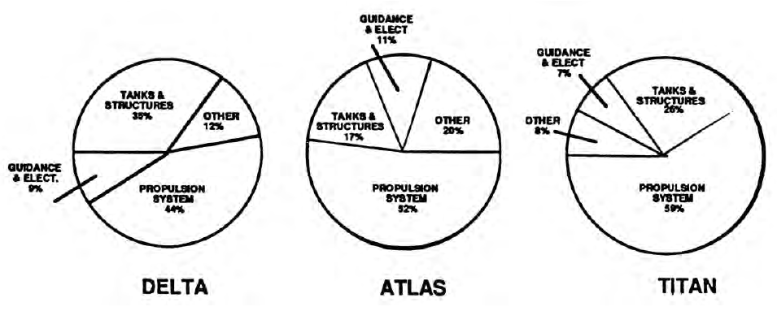
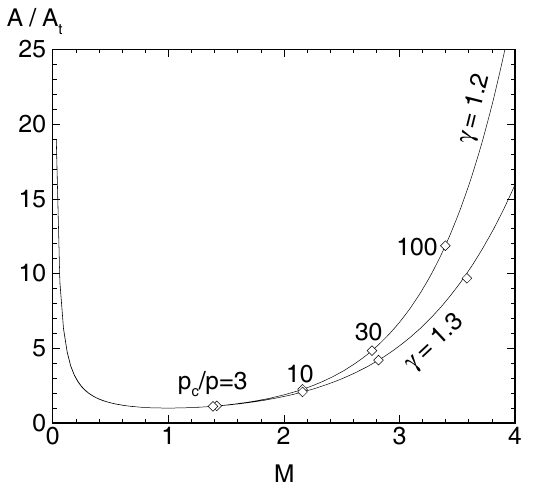
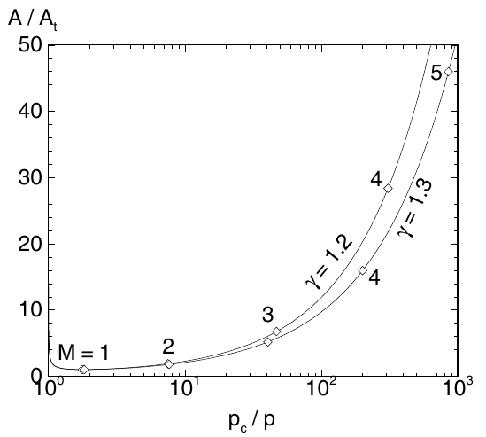

Outline of the lecture
Introduction Compressible flow Space mission requirements Performance indices Liquid propellant engines Solid rocket motors Hybrid motors
Electric thrusters Nuclear propulsion Secondary propulsion Staging Current challenges Possible future developments
Goals of space propulsion
propellere (latin) = “push forward”
In order to:
attain very high speed
overcome gravity/aerodynamic forces
maneuvers
attitude adjustment
decelerate (re-entry, soft landing)
Thrust generated as reaction to expulsion of a propellant fluid
Key requirement : lightweight (both engine and propellants) and cost
Thrust generation
Reaction to ejection of propulsive fluid momentum:
rocket engine: propellants stored on board \rightarrow products
Engine
Thrust (kN) SL/Vacuum
Adopted by
Price (M$)
Year
Vulcain 2
960 / 1359
Ariane 5
12
2017
RS–25
1860 / 2279
Space Shuttle
50
2011
RS–68
2950 / 3137
Delta IV
15
2006
RD–180
3830 / 4150
Atlas V
23.5
2017
Search for simplicity \rightarrow contain part count
Solid Rocket Motors (SRMs)
Pros/cons:
simple
storable
easily scalable design
lower performance (u_{eff} )
non re–ignitable, non throttleable
Main components:
combustion chamber
propellant grain
igniter
nozzle
Uses: boosters, upper stages, tactical missiles, gas generators
Classification based on Energy Source
– Exhaust jet momentum generated by means of energy …
Chemical : Oxidizer/Fuel, Monopropellant (Thermal)Solar : Thermal, Electric(Electric) : Solar, Nuclear, ChemicalNuclear : Thermal
Classification based on Propulsive Principle
– Transformation of primary energy into jet kinetic energy …
Thermal : Chemical, Nuclear, SolarElectrostatic (ions) : Electrical ← Solar,Electromagnetic (plasma) : Electrical ← Solar
2 & 3 give low thrust/weight ratios (cannot lift off from the ground).
Engineering goal
attain given target at minimum cost
costs of a space mission:
launcher, payload, launch operations, monitoring, insurance, propellants

Propulsion system dominating: 44% to 59%; > 70% including tanks
Space missions requirements (∆v)
Mission
Velocity (m/s)
Intercontinental Ballistic Missiles (ICBM)
8000
Low Earth Orbit (LEO)
9000
Escape from Earth’s gravity; Moon impact
12500
Geostationary Equatorial Orbit (GEO)
13000
Soft landing on the Moon
15000
Round trip to the Moon
18000
Round trip to Venus/Mars
18000 ÷ 27000
Compensation of orbital perturbations
50 (per year)
Why using rockets?
Space missions require:
very high speed
operating outside the atmosphere
Jet engine: f \simeq \dot{m} (u_e - v)
Rocket: f \simeq \dot{m} u_e
Thrust jet engine : limited by u_e - v Rocket thrust : independent of v \rightarrow any v can be attained (in principle)
where u_e is the jet exit velocity and v is the aircraft/rocket speed
Lecture’s objective
We want to understand how the nozzle design of a thermo-chemical solid rocket motor influences the thrust and the specific impulse
Derivation of the thrust of an endoreactor
\begin{equation}
\sum_{i}F_{i}=\frac{d}{dt}\int_{V}\rho udV+\int_{S}\rho u\left(\boldsymbol{u}\cdot\boldsymbol{n}\right)dS
\end{equation}
\begin{equation}
\int_{S}\rho u\left(\boldsymbol{u}\cdot\boldsymbol{n}\right)dS=\left(\rho_{e}u_{e}A_{e}\right)u_{e}=\dot{m}_{p}u_{e}
\end{equation}
\begin{equation}
\sum_{i}F_{i}=F+\int_{S-S_{e}}p_{a}\left(-\boldsymbol{n}\cdot \boldsymbol{i}\right)dS+\int_{S_{e}}p_{e}\left(-\boldsymbol{n}\cdot \boldsymbol{i}\right)dS
\end{equation}
\begin{equation}
\oint_{S}\boldsymbol{n}dS=0
\end{equation}
\begin{equation}
\int_{S-S_{e}}p_{a}\left(-\boldsymbol{n}\cdot\boldsymbol{i}\right)dS=\int_{S_{e}}p_{a}\left(\boldsymbol{n}\cdot\boldsymbol{i}\right)dS=p_{a}A_{e}
\end{equation}
\begin{equation}
\sum_{i}F_{i}=F-\left(p_{e}-p_{a}\right)A_{e}
\end{equation}
\begin{equation}
F=\dot{m}_{p}u_{e}+\left(p_{e}-p_{a}\right)A_{e}
\end{equation}
What is the expansion ratio that gives the maximum thrust?
F = \dot{m}u_e + (p_e - p_a)A_e
dF = \dot{m} du_e + (p_e - p_a)dA_e + A_e dp_e
\begin{align*}
dF &= \rho_e u_e A_e du_e + A_e dp_e + (p_e - p_a) dA_e \\
&= (\rho_e u_e du_e + dp_e) A_e + (p_e - p_a) dA_e \\
&= (p_e - p_a) dA_e
\end{align*}
dF/dA_e nullifies and has a maximum for A_e such that p_e = p_a , which is called adapted nozzle condition, when the pressure thrust in zero and only the impulsive thrust remains.
Equivalent Exhaust Velocity: F = \dot{m}_p u_{eq} \Rightarrow u_{eq} = \frac{F}{\dot{m}_p} = u_e + \frac{(p_e - p_a)A_e}{\dot{m}_p}
Ideal Nozzle
Hypotheses:
combustion details ignored
thermally and calorically perfect
non-reactive, homogeneous gas
steady flow
1D or quasi-1D model
negligible nozzle inlet flow velocity
conditions are uniform in space and time
isentropic flow (unless shocks)
inviscid and adiabatic flow
For mass conservation :
\rho u A = (\rho + d\rho)(u + du)(A + dA) \quad \Rightarrow \quad d(\rho u A) = 0 \quad \Rightarrow \quad \dot{m} = \rho u A = \text{const.}
For momentum conservation :
\dot{m}(u + du) - \dot{m}u = pA + \left(p + \frac{dp}{2}\right)dA - \left(p + dp\right)(A + dA) \quad \Rightarrow \quad dp + \rho u du = 0
For energy conservation :
\dot{m} \left[e + \frac{u^2}{2} + d \left(e + \frac{u^2}{2} \right) \right] - \dot{m} \left(e+\frac{u^2}{2}\right) = puA - (p + dp)(u + du)(A + dA)
\dot{m} d\left(e + \frac{u^2}{2}\right) + d(puA) = 0 \quad \Rightarrow \quad \dot{m} d\left(e + \frac{u^2}{2}\right) + d\left(\dot{m} \frac{p}{\rho}\right) = 0
\dot{m} d\left(e + \frac{p}{\rho} + \frac{u^2}{2}\right) = 0 \quad \Rightarrow \quad dh_0 = 0
Tds = dh - dp/\rho \quad \Rightarrow \quad Tds = dh + udu = dh_0 = 0
dh - dp/\rho = 0 \quad \Rightarrow \quad \frac{T}{T_c} = \left(\frac{p}{p_c}\right)^\frac{\gamma - 1}{\gamma}
Thus: h_0 = h_c = const., T_0 = T_c = const., p_0 = p_c = const.
From the energy eq. we obtain the velocity at a generic nozzle section:
u_e = \sqrt{2(h_c - h_e)} = \sqrt{\frac{2 \gamma}{\gamma - 1} R T_c \left(1 - \frac{T_e}{T_c}\right)}
\quad \Rightarrow \quad
u_e = \sqrt{\frac{2 \gamma}{\gamma - 1} \frac{\mathcal{R} T_c}{\mathcal{M}} \left[1 - \left(\frac{p_e}{p_c}\right)^{\frac{\gamma - 1}{\gamma}}\right]}
u_{lim} = \sqrt{\frac{2\gamma}{\gamma - 1} \frac{\mathcal{R}T_c}{\mathcal{M}}} \quad \text{and} \quad u_e = u_{lim} \sqrt{\left[1 - \left(\frac{p_e}{p_c}\right)^\frac{\gamma-1}{\gamma}\right]}
We also want to express the mass flow rate as a function of nozzle characteristic variables:
\dot{m} = \rho_* u_* A_* = \rho_t u_t A_t
u_t = a_t = \sqrt{\gamma R T_t} = \sqrt{\gamma R T_c \left(\frac{T_t}{T_c}\right)} = \sqrt{\gamma R T_c \left(\frac{1}{1+\frac{\gamma - 1}{2}M_t^2}\right)} = \sqrt{\gamma R T_c} \left(\frac{2}{\gamma + 1}\right)^{1/2}
\rho_t = \rho_c \left(\frac{\rho_t}{\rho_c}\right) = \frac{p_c}{R T_c} \left(\frac{1}{1+\frac{\gamma - 1}{2}M_t^2}\right)^\frac{1}{\gamma - 1} = \frac{p_c}{RT_c} \left(\frac{2}{\gamma + 1}\right)^\frac{1}{\gamma - 1}
\dot{m} = \frac{p_c}{RT_c} \left(\frac{2}{\gamma + 1}\right)^\frac{1}{\gamma - 1} \sqrt{\gamma R T_c} \left(\frac{2}{\gamma + 1}\right)^{1/2} A_t = \frac{p_c A_t}{\sqrt{RT_c}} \sqrt{\gamma \left(\frac{2}{\gamma + 1}\right)^\frac{\gamma + 1}{\gamma - 1}}
\dot{m} = \frac{\Gamma p_c A_t}{\sqrt{R T_c}} \quad \text{where} \quad \Gamma = \sqrt{\gamma \left(\frac{2}{\gamma + 1} \right)^\frac{\gamma + 1}{\gamma - 1}}
Code
import numpy as npimport matplotlib.pyplot as plt# Define the gamma values (x-axis) = np.linspace(1.15 , 1.40 , 100 )# Define the function for Gamma (y-axis) = np.sqrt(gamma * (2 / (gamma + 1 )) ** ((gamma + 1 ) / (gamma - 1 )))# Create the plot = 'black' )# Set axis labels r'$\gamma$' )r'$\Gamma$' )# Set axis limits to match the original plot 1.15 , 1.40 )0.63 , 0.69 )# Show grid True )# Show the plot
Expression of the thrust of an (adapted) nozzle:
F = \Gamma p_c A_t \sqrt{\frac{2\gamma}{\gamma-1} \left[1 - \left(\frac{p_e}{p_c}\right)^\frac{\gamma-1}{\gamma}\right]}
Then, we can define the thrust coefficient :
C_F = \frac{F}{p_c A_t} = \Gamma \sqrt{\frac{2\gamma}{\gamma-1} \left[1 - \left(\frac{p_e}{p_c}\right)^\frac{\gamma-1}{\gamma}\right]} + \frac{A_e}{A_t} \left( \frac{p_e}{p_c} - \frac{p_a}{p_c} \right)
The thrust F = C_F p_c A_t is:
independent of \mathcal{M} and T_c
linearly dependent on A_t
more than linearly dependent on p_c
linear in C_F (decreasing with \gamma and has a max. when \epsilon gives p_e = p_a
C_F = f(\gamma, \epsilon, p_c/p_a)
Separation for p_e < (0.25 ÷ 0.4) p_a
Higher ratios p_c/p_a → higher C_F but require higher \epsilon = A_e/A_t → higher nozzle weight, friction losses
\frac{A}{A_t} = \frac{1}{M} \left(\frac{1+\frac{\gamma - 1}{2}M^2}{\frac{\gamma + 1}{2}}\right)^\frac{\gamma+1}{2(\gamma-1)}

\frac{A}{A_t} = \left[\frac{(\gamma-1)/2}{[(\gamma+1)/2]^{(\gamma+1)/(\gamma-1)}}\right]^{1/2}\frac{(p_c/p)^{(\gamma+1)/(2\gamma)}}{[(p_c/p)^{(\gamma+1)/(2\gamma)}-1]^{1/2}}

Let’s introduce another characteristic parameter of SRMs, the Specific Impulse :
I_{sp} = \frac{u_{eq}}{g_0} = \frac{F}{\dot{m_p}g_0} = \frac{1}{g_0} \left(\frac{p_c A_t}{\dot{m_p}} \right) C_F = \frac{c^* C_F}{g_0}
c^* = \frac{p_c A_t}{\dot{m}_p} = \frac{\sqrt{R T_c}}{\Gamma} = \frac{1}{\Gamma} \sqrt{\frac{\mathcal{R} T_c}{\mathcal{M}}}
The specific impulse:
increases with T_C
decreases with \mathcal{M}
has a maximum when \epsilon is such that p_e = p_a
slighlty increases with p_c thanks to the increases of the pressure term in C_F